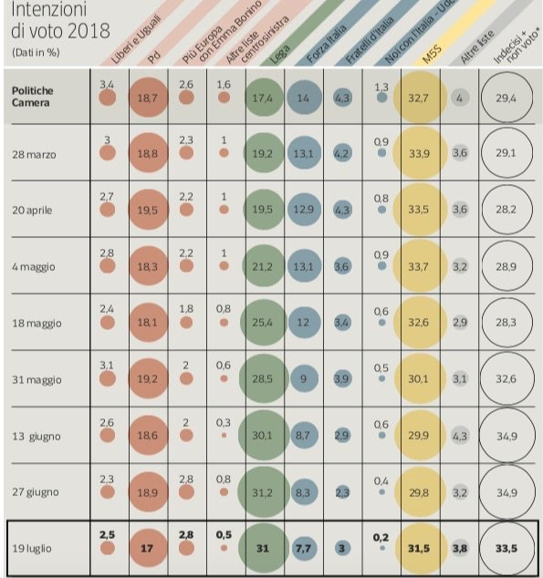

Si consideri il seguente grafico pubblicato dal Corriere della Serao relativo alle intenzioni di voto degli italiani.
Sopra il grafico è riportato il titolo Testa a testa tra Lega e M5S. Pd perde l’1,9%
Analisi
Analizzare il grafico sopra riportato secondo gli aspetti seguenti:Question:- è stata definita chiaramente o è evidente una domanda (o più di una) a cui la visualizzazione risponde?
L'obiettivo della visualizzazione è relativamente chiaro: mostrare l'evoluzione nel tempo delle preferenze, in particolare confrontando l'ultimo dato (del 19/7) con quello delle elezioni.
Data:- i dati mostrati sono validi e supportano la domanda?
I dati sono generalmente validi. La somma delle preferenze per i diversi partiti o liste somma correttamente a 100.
Un problema significativo è è che il tasso di astensione (ultima colonna) non è confrontabile con le altre percentuali:
- il dato di astensione (A) si riferisce all'intera popolazione totale (T)
- gli altri dati (Pi) si riferiscono a chi ha indicato una preferenza, ovvero alla popolazione totale meno gli astenuti (T - A)
Visual:le caratteristiche visuali sono usate appropriatamente?
Riguardo gli aspetti visuali si valuti l’integrità visuale secondo i tre aspetti:
Proportionality:- le misure sono riportate in maniera uniformemente proporzionale?
Il problema principlae è data dalla difficoltà percettiva di confrontare le aree che rappresentano i dati.
Utility:- tutti gli elementi presenti nel grafico trasmettono informazioni utili?
La griglia di fondo, pare serva a raggruppare le liste ma di fatto ostacola la lettura. Inutile anche il riquadro con linea più spessa ad evidenziare l'ultima rilevazione.
Clarity:- i dati del grafico sono chiaramente identificabili e comprensibili (opportunamente descritti)?
La griglia complica la lettura globale del diagramma ostacolando lo scorrimento orizzontale e verticale dello sguardo. Inoltre essendo sopra i dati ne ostacola la lettura.
Design
Riprogettare la visualizzazione in modo da risolvere i problemi evidenziati nell'analisi.
Tutti i dati necessari alla visualizzazione devono essere inseriti in un file dati con formato JSON o CSV.
Soluzione con un diagramma a linee e punti. I dati sono stati riparametrizzati a percentuali della popolazione, quindi confrontabili con gli astenuti.
Soluzione con un diagramma a linee e punti. I dati sono matenuti tali e quali ma gli astenuti sono riportati su una scala separata.
Inserire le risposte all'interno del presente file,
in particolare negli elementi <div>
che hanno come classe answer.